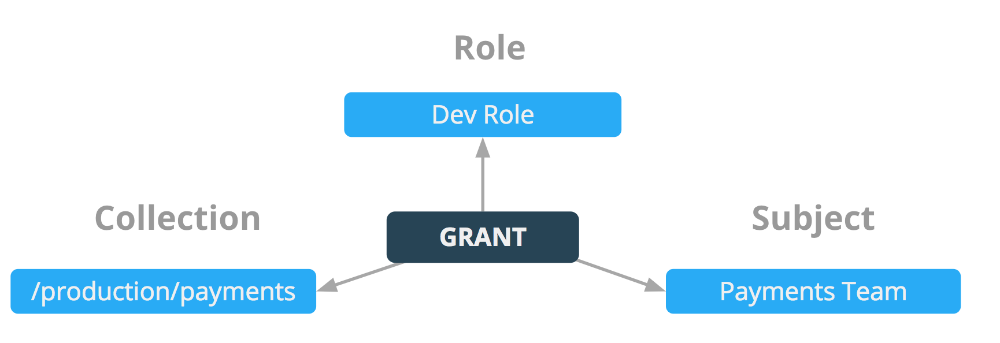

Managing Application Access with Docker EE
Welcome to the Docker Access Control Lab! In this lab you will learn the tools that are available to you in Docker EE to build a multi-tenant container platforms.
This lab consists of three parts:
- Setup of the identity backend. Here we will deploy a self-contained LDAP server on UCP and use the accounts here as examples for the rest of the lab.
- Creation of access policies to define what networks, containers, and services can be deployed where.
- The deployment of applications to demonstrate how access control can help you build self-service multi-tenant container infrastructure.
Difficulty: Intermediate
Time: Approximately 40 minutes
Tasks:
Prerequisites
Document conventions
-
When you encounter a phrase in between
<and>you are meant to substitute in a different value.For instance if you see
<dtr domain>you would actually type something likeip172-18-0-7-b70lttfic4qg008cvm90.direct.microsoft.play-with-docker.com -
When you see the Linux penguin all the following instructions should be completed in your Linux console
-
When you see the Windows flag all the subsequent instructions should be completed in your Windows cosnsole.

Understanding the Play With Docker Interface

There are three main components to the Play With Docker (PWD) interface
1. Console Access
Play with Docker provides access to the 3 Docker EE hosts in your Cluster. These machines are:
- A Linux-based Docker EE 17.06 Manager node
- A Linux-based Docker EE 17.06 Worker node
- A Windows Server 2016-based Docker EE 17.06 Worker Node
By clicking a name on the left, the console window will be connected to that node
2. Access to your Universal Control Plane (UCP) and Docker Trusted Registry (DTR) server
Additionally, the PWD screen provides you one-click access to the Universal Control Plane (UCP)
web-based management interface as well as the Docker Trusted Registry (DTR) web-based management interface. Click on either the UCP or DTR button will bring up the respective server web interface in a new tab.
3. Session Information
Throughout the lab you will be asked to provide either hosntnames or login credentials that are unique to your environment. These are displayed for you at the bottom of the PWD screen.
Accessing PWD
-
Navigate in your web browswer to the PWD environment sign-in page
Note: You might want to right click the above link and open it in a new tab or window
-
Fill out the form, and click
submit. You will then be redirected to the PWD environment. -
Click
AccessIt will take a few minutes to provision out your PWD environment. After this step completes, move on to Task 1 of the lab.
Docker Enterprise Access Control
Cluster Role-Based Access Control
Docker EE 17.06 introduced a greatly enhanced Access Control system for UCP 2.2. The new Access Control model provides an extremely fine-grained control of what resources users can access within a cluster. Use of RBAC is highly recommended for a secure cluster. Security principles of least privilege dictate the use of access control to limit access to resources whenever possible.
Access Control Policy
Docker EE Access Control is a policy-based model that uses access control lists (ACLs) called grants to dictate access between users and cluster resources. A grant ties together who, has permission for which actions, against what resource. They are a flexible way of implementing access control for complex scenarios without incurring high management overhead for the system administrators.
As shown below, a grant is made up of a subject (who), role (which permissions), and a collection (what resources).

Note: It is the UCP administrators’ responsibility to create and manage the grants, subjects, roles, and collections.
Subjects
A subject represents a user, team, or organization. A subject is granted a role for a collection of resources. These groups of users are the same across UCP and DTR making RBAC management across the entire software pipeline uniform.
- User: A single user or system account that an authentication backend (AD/LDAP) has validated.
- Team: A group of users that share a set of permissions defined in the team itself. A team exists only as part of an organization, and all team members are members of the organization. A team can exist in one organization only. Assign users to one or more teams and one or more organizations.
- Organization: The largest organizational unit in Docker EE. Organizations group together teams to provide broader scope to apply access policy against.
Roles and Permissions
A role is a set of permitted API operations that you can assign to a specific subject and collection by using a grant. Roles define what operations can be done against cluster resources. An organization will likely use several different kinds of roles to give the right kind of access. A given team or user may have different roles provided to them depending on what resource they are accessing. There are default roles provided by UCP, and there is also the ability to build custom roles.
Custom Roles
Docker EE defines very granular roles down to the Docker API level to match unique requirements that an organization may have. Roles and Permission Levels has a full list of the operations that can be used to build new roles.
Collections
Docker EE enables controlling access to swarm resources by using collections. A collection is a grouping of swarm cluster resources that you access by specifying a directory-like path. Before grants can be implemented, collections need to be designed to group resources in a way that makes sense for an organization.
The following example shows the potential access policy of an organization. Consider an organization with two application teams, Mobile and Payments, that share cluster hardware resources, but still need to segregate access to the applications. Collections should be designed to map to the organizational structure desired, in this case the two application teams.

Note: Permissions to a given collection are inherited by all children of that collection.
Collections are implemented in UCP through the use of Docker labels. All resources within a given collection are labeled with the collection, /production/mobile for instance.
Collections are flexible security tools because they are hierarchical. For instance, an organization may have multiple levels of access. This might neccessitate a collection architecture like the following:
Task 1 - Identity Setup
In this step we will setup an identity provider within UCP. Normally this would be outside of the container cluster. All of the following commands should be done on the manager1 node.
Setting up LDAP in a container
1.1 Git clone the following directory to your UCP controller node and then cd in to that directory.
[manager1] ~ $ git clone https://github.com/mark-church/docker-access-control.git
[manager1] ~ $ cd docker-access-control
1.2 Deploy the OpenLDAP server by deploying it as a service from the compose file in this folder.
[manager1] ~/docker-access-control $ docker stack deploy -c docker-compose.yml ldap
Creating network ldap_default
Creating service ldap_openldap
1.3 Verfiy that your OpenLDAP container is functional by checking that it is up.
[manager1] ~/docker-access-control $ docker ps | grep "ldap"
a91c1acf821a chrch/ldap:latest "/container/tool/b..." 29 minutes ago Up 29 minutes 389/tcp, 636/tcp ldap_openldap.1.tevp0yays03grlqipx8fs4gk5
1.4 Now use the following command to check the LDAP entries. Use the container ID from the above command to insert into this command where it says <container_id>.
[manager1] ~/docker-access-control $ docker exec <container_id> ldapsearch -x -h localhost -b dc=orcabank,dc=com -D "cn=admin,dc=orcabank,dc=com" -w docker123
You should get an output that shows the OrcaBank org.
Good job! Your LDAP server is fully functional and has the entries in it to complete the rest of the lab.
Configuring LDAP connection to UCP
1.5 Log in to UCP GUI with the admin credentials (admin / admin1234).

1.6 In the UCP GUI go to Admin / Admin Settings / Authentication & Authorization. This is the page where you will be filling out the configuration to connect with LDAP.

You will edit the following default values. For <ucp-controller-host-ip> use the host IP address of the UCP controller host. The following command will get the IP address for you if you run it on the CLI of the manager1 node.
[manager1] ~/docker-access-control $ ip add sh eth0 | grep "inet"
inet 192.168.0.34/24 scope global eth0
- Default Role For All Private Collections: None
- LDAP Enabled: Yes
- LDAP Server URL:
ldap://192.168.0.34:389 - Reader DN:
cn=readonly,dc=orcabank,dc=com - Reader Password:
docker123 - Skip TLS Verification: Checked
- Just-In-Time User Provisioning: Unchecked

1.5 Check “Add LDAP User Search Configuration” and fill in the following values.
- Base DN:
dc=orcabank,dc=com - Username Attribute:
uid - Fullname Attribute:
cn - Filter: Leave blank
- Search Subtree Instead Of Just One Level: Checked
Press “Confirm” at the bottom of this section or these settings will not stick.

1.6 Click “Save” at the bottom of the page.
1.7 Test the connection by putting in the credentials of one of the users under the “LDAP TEST LOGIN” area.
- Username:
mindi - Password:
docker123
Congratulations you have now linked your identity provider with UCP and UCP has ingested the user accounts so that users can login and get authenticated.
Task 2 - Importing Teams
For Part 2 of this lab we are going to configure the access control for a fictional company called OrcaBank. OrcaBank has four different groups of users. There are two independent development teams. The developers on these teams need read access to their containerized applications. There is an Ops team responsible for deploying applications on behalf of the dev teams. Finally there is an admin that is responsbile for the container infrastructure itself.
Importing teams through LDAP
In the following tasks we will create teams and configure them to pull in members through LDAP.
2.1 Under “Admin” on the left nav panel, go to Organizations & Teams.
2.2 Create the “orcabank” organization. This is the organization that you will create the following teams under.
2.3 Click on the “orcabank” organization and then select the button “Create Team”. You will create three teams underneath “orcabank”.
2.4 On the “Create team” page you will input the following values for the three teams.
- Mobile App Dev Team
- Team Name:
mobile - Description: blank
- Enable Sync Team Members: Checked Yes
- LDAP Match Method: Checked “Match Search Results”
- Search Base DN:
ou=mobile,dc=orcabank,dc=com - Search Filter: blank
- Immediately Sync Team Members: Checked Yes
Hit “Create” in the bottom right corner to create the team.
2.5 After you have created the mobile team, you should see it listed underneath the “orcabank” organization.
2.6 Now check to make sure that users have been synced on to this team. Press “View Users” for the mobile team. You should see a single user listed named Mindi. Mindi was synced from our LDAP backend.
2.5 Now follow the same process for the “payments” and “ops” teams. All configuration values should be the same except for the search string and the team name.
- Payments App Dev Team
- Team Name:
payments - Description: blank
- Enable Sync Team Members: Checked Yes
- LDAP Match Method: Checked “Match Search Results”
- Search Base DN:
ou=payments,dc=orcabank,dc=com - Search Filter: blank
-
Immediately Sync Team Members: Checked Yes
- Ops Engineering Team
- Team Name:
ops - Description: blank
- Enable Sync Team Members: Checked Yes
- LDAP Match Method: Checked “Match Search Results”
- Search Base DN:
ou=ops,dc=orcabank,dc=com - Search Filter: blank
- Immediately Sync Team Members: Checked Yes
2.6 You should now see the three teams you have created underneath the orcabank organization.
Task 3 - Creating Collections and Roles
Collections
Collection design is a very important step in architecting access control. Collections are grouping of resources that should be arranged so that they fit your organizational structure. Collections are hierarchical and can be nested which provides many different design choices. For OrcaBank we are going to create two collections - mobile and payments. They will both be inside another collection called “Shared”. Nesting these two collections inside another will allow the development teams to only see their own applications, yet the ops team will have access to both apps as they will have access to the top-level “Shared” collection.
The folder structure below demonstrates the following design. Both app teams will share the same nodes, but container resources like services, networks, and volumes will be virtually separated as they are in different collections.

3.1 Click on Collections on the UCP left nav bar. There are two collections in UCP by default called “System” (for infrastructure resources such as UCP controllers) and “Shared” (for application resources). We will be creating two custom collections underneath Shared.
3.2 Next to the Shared collection click “View Children”.
3.3 Inside the Shared collection, click “Create Collection”. Input mobile for the collection name and press “Create”.
3.4 Do the same process again and create a collection called payments.
3.4 You should now see three collections in /Shared. There is “Private”, a default collection, and your two custom collections.
Roles
In UCP roles are highly customizable down to the Docker API level. We are going to create a custom role for the OrcaBank develoment teams we can specify exactly what the developers should and should not have access to do.
3.5 Click on Roles on the left nav bar. There are some default roles that already exist. These are pre-created roles.
3.6 Click on “Create Role” and title the role “Dev”. In the next task this role will be applied to the mobile and payments development teams.
3.7 After naming the role, click “Operations” on the left hand side of the “Create Role” page. All of the operations here are individual actions that can be combined to create a custom role.
3.8 Select the following operations for the Dev role. You may have to expand some of the fields to find them. After you have checked them, press “Create”.
- Container Logs
- Container View
- Service View
- Service View Tasks
3.9 After you have created the role, you should see it listed on the Roles page. If you click on the Dev role, the right hand info bar will show you the specific actions that are permitted with this role.
Congratulations! You have now created collections and roles. These are the basic building blocks for strong and flexible access control. In the next task we will combine these components and watch the system at work!
Task 4 - Creating Grants
Grants tie together subjects (our teams), roles, and collections in a single rule that enforces access. Grants are an easy way of defining all of the access policy that you need in your container infrastructure.

The goal for OrcaBank is to define access for the three teams that they have - mobile, payments, and ops. To do this we will create three grants.
4.1 On the left nav bar, click Grants. Here you will see some default grants that exist in UCP. The grants here define access for administrators. For example, “admin - Full Control - /” means that the admin account (subject) has Full Control (role) access against / collection (the entire cluster).

4.2 Create a grant for the ops team by clicking “Create Grant”. You will choose the following options on the next page.
- Collections:
/Shared
You will have to click “View Children” to go deeper in the collection hierarchy to find “Shared”.
- Roles:
Full Control -
Subjects: Organizations ->
orcabank->ops
4.3 Create a grant for the payments team by following the same process.
- Collections:
/Shared/payments - Roles:
Dev - Subjects: Organizations ->
orcabank->payments
4.4 Create the last grant for the mobile team.
- Collections:
/Shared/mobile - Roles:
Dev - Subjects: Organizations ->
orcabank->mobile
4.5 In the Grants page, you should see the three grants that you created in addition to the default ones that are already there. These custom grants should look the same as the below picture.
It’s a long road, but we are almost at the end! The access control configuration is now done! Let’s deploy an application and see this at work.
Access Control at Work
In this task we will log in as different teams to deploy apps and will explore how each grant governs our view of the resources we interact with.
5.1 Log out of UCP and log back in with the credentials of Omar from the Ops Team (omar / docker123). Omar is not an admin so notice that he does not have the ability to control access policies and grants. Next you are going to deploy a service as a member from the Ops team.
5.2 Click on Services on the left nav bar and click “Create Service”
5.3 In the Create Service page put in the following values:
- Details
- Name:
payments-app - Image:
chrch/docker-pets:1.0 - Collection:
/Shared/payments
Now hit “Create”.
5.4 Now create a service for the mobile team.
- Details
- Name:
mobile-app - Image:
chrch/docker-pets:1.0 - Collection:
/Shared/mobile
5.5 Now click on the payments-app service. In the right hand info pane you can see the collection that it was deployed in. It should say /Shared/payments. If it is a different collection, then the wrong collection was selected at deployment time.
5.6 Now log out of UCP. Log back in as Mindi from the Mobile Team (mindi / docker123).
5.7 Click on Services. Mindi should only be able to see the mobile-app service as it is the only service in the /Shared/mobile collection that she has access to.
5.8 Click on the mobile-app service. Go through the following flow to get the logs for the app:
Inspect Resource -> Containers -> Click on Container - > View Logs
Mindi should be able to view the logs for this app.
5.9 Now click on the container again and click Actions -> Restart.
The access control should report a message access denied: no access to Container Restart. This is because Mindi has access to view the container and its logs but not to affect its state in any way.
This concludes the access control lab.
Survey
We’re grateful you’ve chosen to spend some time with us today. We’d appreciate the opportunity to hear from you about what you liked and what we might improve.
If you could please fill out this very short survey, it’d be greatly appreciated.
Thanks, the DockerCon Hands-on Labs team.
You can find more information on Docker EE at http://www.docker.com as well as continue exploring using our hosted trial at https://dockertrial.com